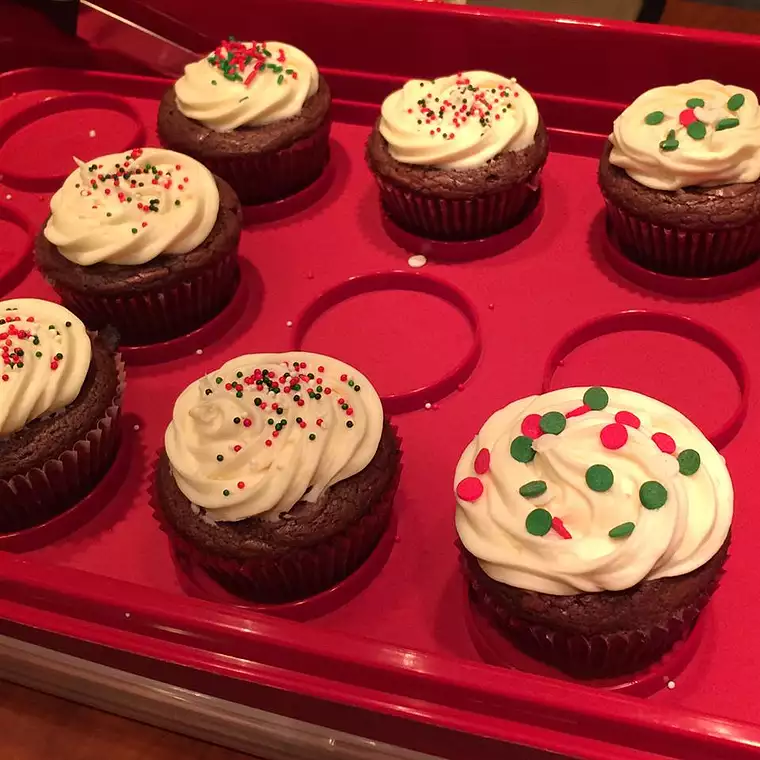

Brownie Cups

Description
This is a delicious recipe for brownie cups
Ingredients
- 14 tablespoons unsweetened cocoa powder
- ¾ cup butter, melted
- 3 tablespoons vegetable oil
- 2 cups white sugar
- 3 eggs
- 2 teaspoons vanilla extract
- 1 cup all-purpose flour
- 1 cup chopped walnuts (Optional)
- 1 ½ cups finely crushed animal cracker cookies
- ⅓ cup white sugar
- 6 tablespoons butter, melted
Steps
- Preheat oven to 350 degrees F (180 degrees C). Lightly grease 24 muffin cups.
- Beat cocoa powder, 3/4 cup butter, oil, and 2 cups sugar with an electric mixer in a large bowl until smooth.
Add eggs one at a time, allowing each egg to blend into butter mixture before adding the next.
Beat in vanilla extract with last egg. Mix flour mixture into egg mixture until just incorporated.
Fold in walnuts, mixing just enough to evenly combine.
- Combine animal cracker crumbs, 1/3 cup sugar, and 6 tablespoons butter in a bowl; mix until well blended.
Press cracker mixture into the bottom of each prepared muffin cup. Pour brownie mixture into muffin cups,
filling 3/4 full.
- Bake in preheated oven until a toothpick inserted in center comes out clean, 25 to 35 minutes.